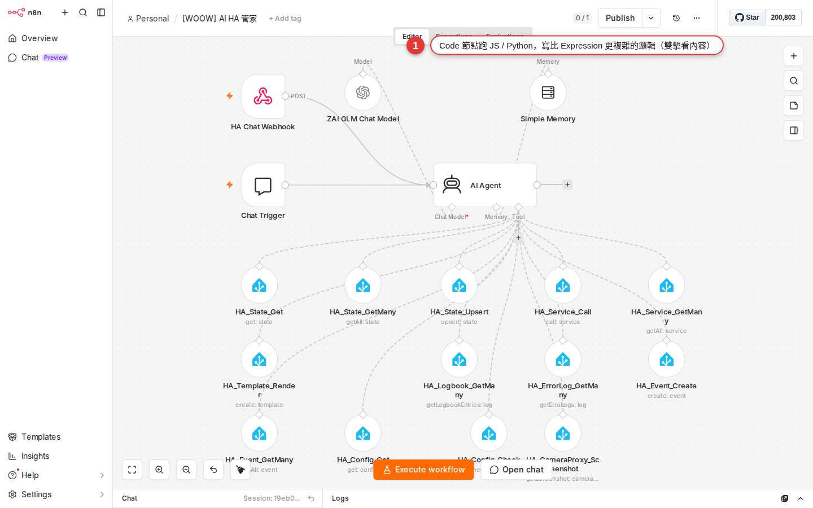

Code node: a few lines of JavaScript inside a workflow
The ready-made nodes cover 90% of what you need. The odd 10% — complex data transformations, merge logic across several sources, content generated on the fly — is what n8n gives you an escape hatch for: the Code node. This chapter shows you how to plug that gap with a few lines of JavaScript inside a workflow. Beginner warning: this chapter contains JS. It is completely fine if you cannot read it — copy the patterns I give you and change the parameters. If you really cannot follow, jumping straight to Chapter 21 AI Agent is fine too; most business situations never need the Code node.
Why the Code node
After the first 19 chapters you will have noticed that eight cases out of ten are handled by a core node plus a SaaS integration node: pull data, filter it, send a message, write to a database. The Set node reshapes it, expressions fill values in dynamically, and Merge/Split put it back together.
But there is always that 10% the ready-made nodes cannot do:
- Orders pulled out of a CRM that have to be regrouped along two dimensions, customer tier × product category — the Set node cannot do it, because that takes a loop.
- An API response buried three levels deep in
{ result: { data: { items: [...] } } }when all you want is the items array — one expression can do it, but add a little more logic and it turns into a mess. - Shopify hands you 20 orders and you have to work out what percentage of total revenue the three largest ones account for — that takes sort, slice and reduce together.
- Turning 100 items into the JSON structure Slack Block Kit expects — piles of nested
{ type, elements: [...] }, which would drive you mad in the Set node.
That is where the Code node comes in. It gives you a blank JavaScript editor: items go in, you write a few lines of code, items come out. You do not need to know how to build applications — for most situations, copying one of the four patterns below and changing the parameters is enough.

Ask first: if Set can do it, do not use Code
The Code node looking cool is not a reason to overuse it. If Set / IF / Switch can solve it, do not open a Code node — because the Code node is JavaScript, and whoever maintains it later (or future you) has to read the code and know JS as well. That bar is a lot higher than a visual node.
| What you want to do | Use this first | When to move up to Code |
|---|---|---|
Combine firstName and lastName into fullName |
The Set / Edit Fields node — one expression, {{ $json.firstName + ' ' + $json.lastName }}, and it is done; the visual route is fastest. |
No need to move up. |
| Amount > 1000 takes path A, everything else takes B | The IF node — two branches drawn plainly on the canvas, so the logic reads at a glance. | No need to move up. |
| Split into three paths by "order status" | The Switch node — the native node for multi-way branching. | No need to move up. |
| Filter items down to the ones where amount > 1000 | The Filter node (newer versions have it), or an IF node with one output wired. | Move up to Code when the condition crosses several fields, or when the condition itself has to be calculated. |
| Add a field or calculate a new value on every item | The Set node plus an expression — that covers most of it. | Move up to Code when you need a loop, or when the conditional transformation runs past 3-4 cases. |
| Sum all the items, average them, group them by something | The Aggregate node (built in), or the Summarize node. | Move up to Code for a top-N ranking, grouping on several dimensions, or anything statistically involved. |
| Take a nested API response apart and rebuild the JSON structure | The Set node plus expressions usually holds up. | Move up to Code only at three levels of nesting or more, or when you need map/reduce. |
The Code node gives you two languages
Open a Code node and the Language option in the top right has two choices: JavaScript and Python. In practice, pick JavaScript 99% of the time. Here is why.
| Language | How it runs | Upside | Downside | Recommendation |
|---|---|---|---|---|
| JavaScript (the default) | Runs in n8n's built-in sandbox; when self-hosted you can also switch to task runners (separate child processes, the newer architecture n8n recommends). | The one n8n leads with; the helper API is complete; there are the most examples; it runs fast. | The default sandbox cannot require external npm packages (you have to enable NODE_FUNCTION_ALLOW_EXTERNAL). |
Pick this by default. Without a specific reason, use JS. |
| Python | From n8n 2 on it uses the native Python task runner (introduced in 1.111.0, stable in n8n 2); the earlier Pyodide (WebAssembly) route is marked legacy and n8n 2 no longer supports it. | You have existing Python logic to move over; you can pip install the standard library plus third-party packages (only when you self-host and have the task runner set up). |
Native Python only takes bracket access (_input.item['json'], not .json); whether Cloud has it enabled depends on your plan; community examples are still mostly JS. |
Pick it only when you have existing Python logic to port. "I am better at Python" on its own is not a good reason — the community and the examples are all on the JS side. |
Every remaining example in this chapter is JavaScript. The Python syntax differs like this: variables start with an underscore (_input, _json), and the native Python runner only takes bracket access (_input.item['json']['amount']) — the _input.item.json.amount dot syntax that old Pyodide allowed no longer works. When you need it, see the official docs at docs.n8n.io/build/code-in-n8n/using-the-code-node/.
Two run modes: all items at once vs one item at a time
Open a Code node and at the top of the Parameters panel on the right (next to the Language option) there is a Mode dropdown — the official docs word it "Choose a mode". The two options behave very differently, and picking the wrong one duplicates or drops data.
| Mode | Behavior | When to use it | Common use |
|---|---|---|---|
| Run Once for All Items (the default) | The whole items array comes in at once, your code runs once, and it returns a new items array. | When you have to see all the data before you can decide: aggregate, sort, group, rank the top N. | "Total the revenue", "take the top 5 customers", "group by category", "merge two upstreams". |
| Run Once for Each Item | Your code runs once for each item, as if a for loop had already been written for you. | When a single item is enough to decide, and the transformation rule is the same for every one. | "Add tax to each order", "reformat each message", "call an API per item to fill in data". |
- All Items: use
$input.all()to get everything;returnhas to return an array,[{ json: {} }, ...]. - Each Item: use
$input.item.jsonto get the current one;returnreturns a single{ json: {} }.
Items to return were not valid or produces empty output. Examples in this chapter assume All Items mode unless stated otherwise.
Pattern 1: filter
Pick the items that match a condition out of a pile of them. All Items mode.
// Keep only orders over 1000
return $input.all().filter(item => item.json.amount > 1000);In plain words:
$input.all(): gives you every item that came in (an array)..filter(item => ...): a built-in JavaScript array method. It runs that test on every item and keeps only the ones where it istrue.item.json.amount > 1000: the test itself. Change this to your own condition and you are done.return ...: hands the result to the downstream node.
Copy this, swap amount > 1000 for the condition you want (item.json.status === 'paid' and item.json.tags.includes('VIP') both work), and that is it. Chain several conditions with && (and) and || (or):
// Amount over 1000 and tier is gold
return $input.all().filter(item =>
item.json.amount > 1000 && item.json.tier === 'gold'
);Pattern 2: map (transform each item)
Transform every item: add a field, change a field, calculate a new value. All Items mode.
// Combine firstName and lastName into fullName; keep only fullName and age
return $input.all().map(item => ({
json: {
fullName: item.json.firstName + ' ' + item.json.lastName,
age: item.json.age
}
}));In plain words:
.map(item => ({...})): runs that function on every item and returns a new item.{ json: {...} }: the format n8n requires for an item — every item has to be wrapped in ajsonlayer. This one is easy to forget, and forgetting it throwsItems to return were not valid.fullName: ...,age: ...: the fields you want in the output. Write whichever fields you want to add.
If you only want to add a field to the original item rather than rebuild it, use the spread syntax ...item.json to keep every original field and then add the new ones:
// Keep every original field, then add taxAmount and total
return $input.all().map(item => ({
json: {
...item.json, // spread the original fields
taxAmount: item.json.amount * 0.05,
total: item.json.amount * 1.05
}
}));The three dots in ...item.json are JavaScript's spread — "flatten every field of item.json in right here". Writing it this way saves you listing every field by hand.
Pattern 3: aggregate
Shrink a pile of items down to one total. All Items mode.
// Sum every order amount, then work out revenue and item count
const total = $input.all().reduce((sum, item) => sum + item.json.amount, 0);
const count = $input.all().length;
return [{
json: {
total: total,
count: count,
average: total / count
}
}];In plain words:
.reduce((sum, item) => sum + item.json.amount, 0): JavaScript's reduce, for adding an array up as it goes.sumstarts at0(the second argument), each pass addsitem.json.amountto it, and the total comes back at the end.$input.all().length: the length of the array is the item count.return [{ json: {...} }]: note that it still has to be wrapped in an array, even when you return only one item —[{ json: {} }]. Forget the outer[]and it blows up.
To group by something (totalling per customer, say), pair reduce with an object accumulator:
// Total the amounts per customer name
const groups = $input.all().reduce((acc, item) => {
const key = item.json.customer;
acc[key] = (acc[key] || 0) + item.json.amount;
return acc;
}, {});
// turn it back into an items array and return it
return Object.entries(groups).map(([customer, total]) => ({
json: { customer, total }
}));What this does: sort every order into piles by customer, total each pile, and return one item per customer. This is the most common example of "Set cannot do it, but one block of Code can".
Pattern 4: call an external API from the Code node (rare)
Inside a Code node you can await a call to an external API directly, but the HTTP Request node is usually easier to maintain — it has a UI for headers, auth and retry. If you really do need the call inside Code:
// Call an external API and return the response as one item
const response = await this.helpers.httpRequest({
method: 'GET',
url: 'https://api.example.com/x',
headers: { 'Accept': 'application/json' }
});
return [{ json: response }];this.helpers.httpRequest(...) is a helper n8n builds in — the HTTP Request node, written in code. When to use it: when one stretch of logic has to call N APIs in a row, or when a field on an item decides whether to call at all. For a plain single API call, drop in an HTTP Request node.
this.helpers.httpRequest (and the other this.helpers.*, such as getBinaryDataBuffer), crypto (partly) and the built-in array, string and JSON methods all work; fs, external require and a bare fetch do not, by default. For npm packages, see the environment variable NODE_FUNCTION_ALLOW_EXTERNAL in the official docs (self-host only; not possible on Cloud).Common helper APIs at a glance
The Code node comes with a pile of helpers n8n injects for you (the variables starting with $). 90% of the time you only ever use the few below.
| How to write it | What it is | Which mode it works in |
|---|---|---|
$input.all() |
The whole array of items this node received. | Mainly All Items mode; it works in Each Item too, but that is rare. |
$input.item |
The current item (the full object, including json and binary). |
Only meaningful in Each Item mode. |
$input.item.json |
The json part of the current item (what an expression calls $json). |
Common in Each Item mode. |
$('Node Name').all() |
Grabs every item from a named upstream node (it does not have to be the direct upstream). | Works in both modes. |
$('Node Name').first() / .last() |
The first / last item from a named upstream node. | Works in both modes. |
$now |
The current time (a Luxon DateTime object). | Works in both modes. |
$today |
Today at 00:00 (Luxon). | Works in both modes. |
$workflow.id / $workflow.name |
The current workflow's id and name. | Works in both modes. |
$execution.id |
The id of this run (you can look it up on the Executions page). | Works in both modes. |
console.log(x) |
Prints to that node's log tab on the Executions page. | Works in both modes (the debugging workhorse). |
this.helpers.httpRequest({...}) |
Calls an external API (the equivalent of the HTTP Request node). | Works in both modes; needs await. |
For the full list see the official docs at docs.n8n.io/code/builtin/overview/, which also covers the more advanced ones: $jmespath() (JMESPath queries), $max() / $min(), and DateTime (calling the Luxon constructor directly).
What to do when the Code node fails
The Code node throws more errors than any other node type, because you are writing code. The good news is that n8n's error messages are usually clear enough — work through the 4 steps below.
-
Read the red error message under the node panel
When a Code node fails, the node itself turns red and an error message appears below it, usually including a line number. For example
SyntaxError at line 3— jump straight to line 3 and check for an unmatched quote or an unclosed bracket. -
Check that node's log on the Executions page
Left sidebar Executions → click the failed run → click the Code node → switch to the Logs tab at the top. Every
console.log(x)you wrote shows up here. Log as much as you like while you are still building; nobody will hold it against you. -
Check the output is in the right format
The Code node ran fine but the downstream node gets nothing? Check whether the output is in the
[{ json: {...} }]shape — an array on the outside, every item wrapped injson. Forgetting thejsonwrapper is the most common mistake: a barereturn [{ name: 'Elmo' }]makes n8n read every item as empty. Correct:return [{ json: { name: 'Elmo' } }]. -
Print nested objects with
console.log(JSON.stringify(x, null, 2))A plain
console.log(item)sometimes prints only[object Object]and shows you nothing. UseJSON.stringify(item, null, 2)to turn the object into readable JSON before printing, and even several layers of nesting are clear at a glance.
Common pitfalls
-
SyntaxError: Unexpected tokenorUnexpected identifierA JavaScript syntax error, usually unmatched quotes, an unclosed bracket, or a stray semicolon. The error message gives you the line number; go and look at that line and the ones around it. Common cases: mixing Chinese quotation marks
“”with English''(the first pair are not valid JS quotes); one half of a curly brace{}missing;=>typed as->. -
Cannot read properties of undefined (reading 'xxx')The field you are reaching for has nothing in its parent. For example
item.json.customer.email, when thecustomerfield does not exist. Fixes: (a) use optional chaining,item.json.customer?.email; (b) add an if test,if (!item.json.customer) return null;; (c) fix the upstream node first and confirm it really returnscustomer. -
The output is empty and the downstream node gets nothing
Three common causes: (a) you forgot the
return— a function with no return gives backundefined; (b) you forgot the{ json: {} }wrapper — n8n does not recognize your output; (c) the filter condition is too strict — no item matches, so the result is an empty array. That is normal, but check whether you tightened the condition too far. -
Code runs very slowly (>30-second timeout)
Usually a large array (>10,000 items) running
.map/.filter. The fix: put a Split In Batches node upstream and work in batches, feeding 500-1000 items into the Code node at a time. Or check the code for a nested loop (a.mapwith a.filterinside it) — that is O(n²), and it blows up as soon as the data grows. -
Items to return were not validWhat you returned is not in n8n's item format. The correct shape:
[{ json: {...} }]— an array on the outside, and every element an object with ajsonkey. Wrong:return { name: 'Elmo' }(not an array),return [{ name: 'Elmo' }](nojsonwrapper). Each Item mode returns a single{ json: {} }; All Items mode returns an array. -
ReferenceError: fetch is not definedorrequire is not definedThe Community edition sandbox does not enable
fetchorrequire. Call APIs withawait this.helpers.httpRequest({...})instead; to pull in an npm package, self-hosting is the only route — set the environment variableNODE_FUNCTION_ALLOW_EXTERNAL=lodashto open it up (not possible on Cloud).
FAQ
I do not know any JavaScript. Do I have to learn it?
Is Python or JavaScript the better choice?
_input.item['json']['x']), so watch out when you rewrite a JS example. When to use Python: when you have existing Python logic (a string-handling function, say, or a Python snippet from an internal tool) to move over as-is, and you can pip install the packages it needs. "I am better at Python" on its own is not a good reason.Can the Code node use npm packages (lodash or axios, say)?
crypto, querystring and the like). Self-hosting: yes, but you have to set the environment variable NODE_FUNCTION_ALLOW_EXTERNAL=lodash,axios on the n8n container (list the package names you want to open, comma separated) and npm install them into the container. Cloud users who want a similar effect can split the logic into a sub-workflow (Chapter 19) or call an outside service with HTTP Request instead.Can two Code nodes share a variable?
const x = 5 declared in one Code node is invisible in the next. To pass data between nodes, take n8n's regular route — put the data in the output's json, and read it in the next node with $('Previous Code').item.json.x. For a constant shared across the whole workflow, store it in a Set node or use workflow variables ($vars is Enterprise only).Can a Code node await a call to another workflow?
await is this.helpers.httpRequest (calling an external API) and the other built-in helpers that return a Promise. If you want a sub-workflow to run from inside a Code node, restructure it: the Code node prepares the data → Execute Workflow node → the next Code node carries on. The division of labor is clearer that way too.Can I paste Code node code that ChatGPT generated straight in?
items[0].json (the old v0 style) instead of $input.all()[0].json (the current one), which fails at run time with items is not defined; (b) whether the output is wrapped in the { json: {} } format. When you ask an AI for the code, tell it plainly: "n8n Code node, JavaScript, Run Once for All Items mode, use $input.all()" — the odds of getting it right go up a lot. Run the result on a small amount of data once before you take it live.What is the difference between the Code node and an expression?
await. The Code node is a whole node: many lines, variables, loops, await, console.log. The test to apply: if the logic fits inside one {{ }}, use an expression; if it does not (if/else with several branches, a for loop, an intermediate value to hold on to), use the Code node. Expressions are for filling in values dynamically; the Code node is for handling logic.How do I know whether my code will run on Cloud?
fetch is not defined, require is not defined, Module not found). As a rule: (a) all built-in JS syntax is fine (array methods, string methods, JSON, Math, Date); (b) n8n helpers ($input, $now, this.helpers.httpRequest) are fine; (c) npm packages, the fs file system and a bare fetch generally are not. If you are unsure, make a sandbox test workflow and run a few lines to feel it out.